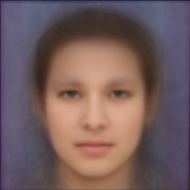

I have been privileged to work on research projects with some of the most outstanding students I have ever known. Students I am currently working with are listed at the top, alumni of my lab are listed in italics
Undergraduate Students
Rishiraj Kanungo Grady McPeak Suraj Shah Kyle Rood Sutton Howell Samsara Counts Sam Hanna Will Lyons Jessica Schreier Joseph O'Sullivan Morgan Redding Daniel Gordon Micah Goodman Ali Bukys Hannah Siebers Christopher Hawley Calvin Murdock Vishnu Halthore Shane Carr Brittany Shannon Tyler Trussel Emily Feder Walker Burgin Nicholas Fridrich Brian Bies Nathaniel Roman Jonathan Cannon Melissa Harris Avi Hoffman Justin Brown Chris Lewis Ian Simon
Master Students
Shrenik Borad Yu Wu Maya Shende Xuqing (Ken) Zhou Tang Li Justine-louise Manning Derek Lefever Joshua Little Eileen Duffner Kylia Miskell Agata Kargol Adina Stoica Jessica Graham Brandon Kerr Bill Chang Devorah Langsham Alex Drake Jed Jackoway Adam Kraft Nicholas Chavez Matthew Klein Patrick McBryde Joe Israelevitz Rachel Tannenbaum Richard Speyer David Ross Thomas Moore Scott Satkin Roman Garnett David Jurgens Doug Clauson John Larson Jacob Perkins Scott Siebers
Doctoral Students / Research Scientists
Kevin Robbins Alper Cetinkaya Alexander Aiersilan
Justine Manning Grady McPeak Zeyu Zhang, PhD Xiaotong Liu, PhD Hong Xuan, PhD Abby Stylianou, PhD Zongyang Li Ian Schillebeeckx, PhD Austin Abrams, PhD David Lu, PhD Zachary Freudenburg, PhD Jay Tucek Michael Dixon Manfred Georg, PhD Nathan Jacobs, PhD Richard Souvenir, PhD Qilong Zhang, PhD